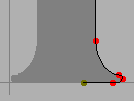
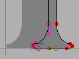
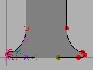
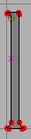
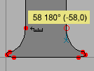
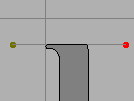
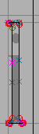
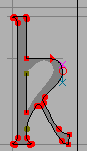
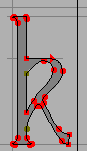

チュートリアル (その 3)
- フォントの作成
- 他のグリフの呼び出し方
- 次のグリフに関して (矛盾のないパスの向き)
- 統一のとれたセリフとステムの太さ
- アクセントつきグリフの組み立て方
- 合字の組み立て方
- メトリックの確認法
- カーニング
- 異体関係にあるグリフ
- アンカーマーク
- 条件つき機能
- フォントのチェック法
- フォントの出力方法
- フォントファミリー
- 最後のまとめ
- スクリプト処理のチュートリアル
- 各種の用字系における注意点
統一のとれたステム幅、セリフと高さをもつ文字の作成法
多くのラテン文字 (ギリシャ文字、キリル文字) のフォントにはステムの終わりに特徴のある終端の形を持っています。 ほとんど全ての LGC フォントにおいては少数の異なるステム幅のみを用いるようになっています (例えば、“l”と“i”の垂直ステムはおそらく同じ幅になっているでしょう)。
FontForge には、一貫性を強制するためのよい方法は備わっていませんが、一貫性チェックしたり矛盾を発見したりするためのコマンドは多数含まれています。
まず文字“l”から始めましょう。 ビットマップを取り込み、そのアウトラインを定義する、お馴染みの作業を進めていきます。
|
 |
 |  |
| 取り込んだ画像 | 拡大ツールを使って下部のセリフを確かめます。ここが左右対称な形になっていることに注意してください。 | セリフの右半分のアウトラインを作ります。 | アウトラインを選択し、編集(E)→コピー(C)、編集(E)→貼り付け(P) を行ってから、最後に エレメント(L)→変形(T)→変形(T)... で 反転... を(プルダウンリストから)選択して 水平 をチェックします。 |
|  |  |
 |
 |
| 反転したセリフを左側にドラッグし、グリフの左端が合うまで動かします。 | パスを選択解除し、端点を選択して反対側の片割れの端点に重なるまでドラッグします。 | グリフを完成させます。 | |
|  |  | ||
| まだやるべき事が 2 つ残っています。まずステム幅を測り、それから“l”の高さに印をつけましょう。 | 物差しツールをツールパレットから選択し、それをステムの片方の端からもう片方にドラッグしましょう。小さなウィンドウが表示されました。そこには幅が 58 ユニット、ドラッグ方向が 180°で、ドラッグしたのは水平に -58 ユニット、垂直に 0 ユニットであると表示されています。 | レイヤパレットに移動し、ガイド(G) ラジオボックスを選択し (これでガイドレイヤが編集可能になります)“l”の高さに合わせて直線を引きます。この線は全てのグリフから見ることができ、このフォントのアセントの高さを表示しています。 |
|
今度は“i”を作りましょう。このグリフは短い“l”の上に点を打ったものに非常に似ています。なので“l”を“i”にコピーしましょう; これにより自動的に正しいステム幅と正しいアドバンス幅が設定されます。コピーはフォントビューから (“l”を含むマスを選び、編集(E)→コピー(C) を押す) でも、アウトラインビューから (編集(E)→選択(S)→すべて選択(A) の後 編集(E)→コピー(C)) でも行うことができます。同様に、ペーストもフォントビューから (“i”を含むマスを選んで 編集(E)→貼り付け(P) を押す) でもできますし、アウトラインビューから (“i”のグリフを開いて 編集(E)→貼り付け(P)) でも可能です。
 |
|
|
|
| “i”の画像を取り込み、次に文字“l”をコピーします。 | “l”の上端のセリフを選択します。 | ドラッグして、正しい高さまで下ろします。 | ガイドレイヤに移動し、x ハイトに合わせて線を追加します。 |


 先ほど作成した“o”に戻りましょう。“o”が、x ハイトの印として置いたガイドラインから上に (ベースラインの下にも) 少しはみ出しているのが分かるでしょう。これはオーバーシュートと呼ばれるもので、目の錯覚を補正するためのものです。曲線が x ハイトと一致しているように見えるためには、およそ (直径の) 3% ふくらんでいる必要があります。
先ほど作成した“o”に戻りましょう。“o”が、x ハイトの印として置いたガイドラインから上に (ベースラインの下にも) 少しはみ出しているのが分かるでしょう。これはオーバーシュートと呼ばれるもので、目の錯覚を補正するためのものです。曲線が x ハイトと一致しているように見えるためには、およそ (直径の) 3% ふくらんでいる必要があります。
編集(E)→クリア(L) を行うやり方があります。
|
 |
 |
端点をセレクトし、点(P)→角の点(C) で角の点に変換します。 |
それから外側の輪郭を描きます。 | 内側の輪郭も作ります。最後に 編集(E)→選択(S)→すべて選択(A) と エレメント(L)→パスの方向を修正(C) を行います。 |